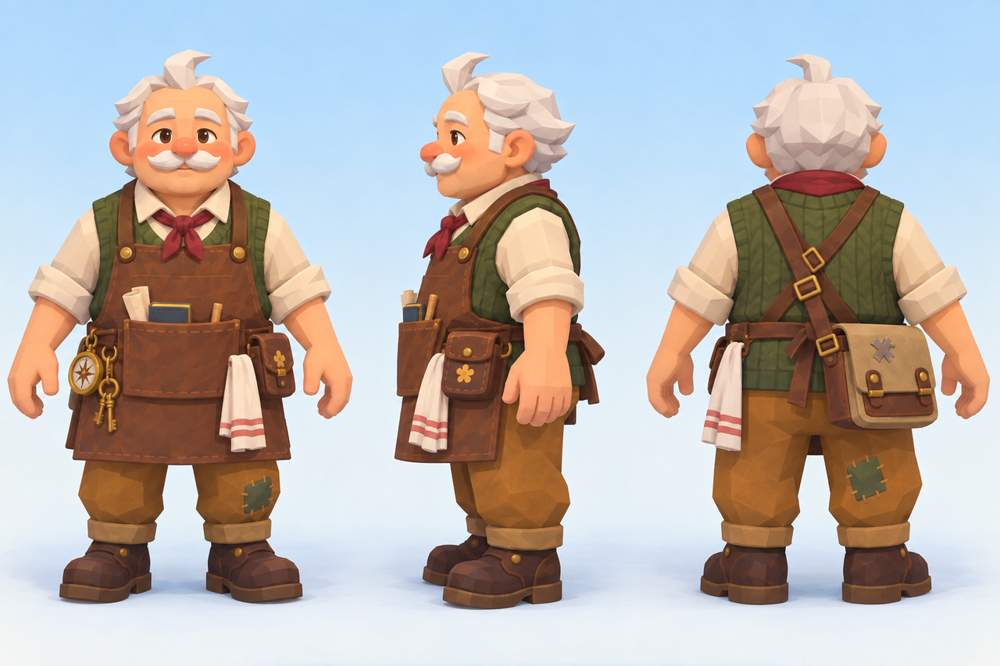
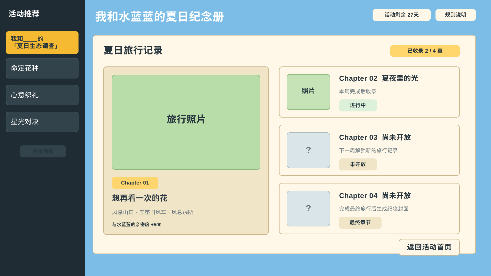
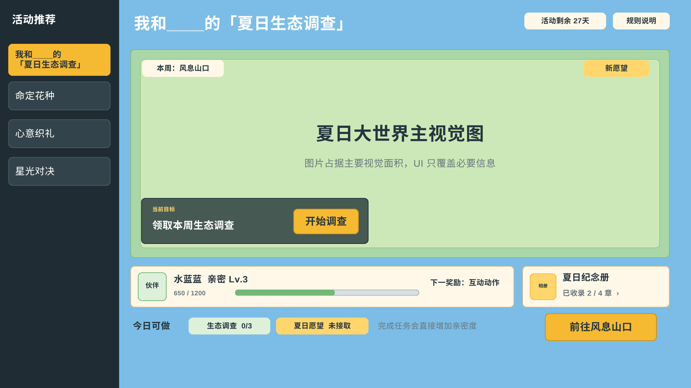
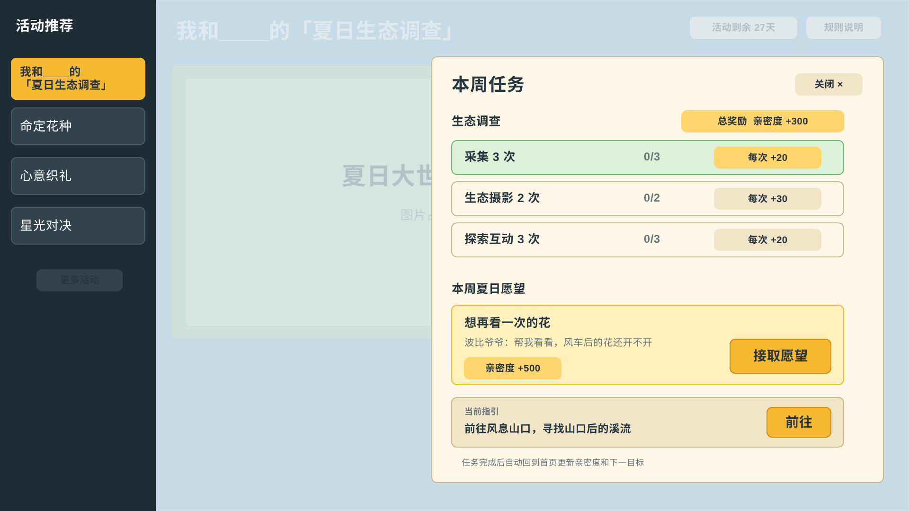

洛克王国 · 世界 / 活动策划方案
我和____的夏日生态调查
带上一只自己的精灵伙伴，记录今年夏天的大世界变化。
本页根据原策划案整理，调整了段落顺序与表格排版。倍率、奖励和参与周期均为设计建议；未确定的内容保留待确认说明。
01 / 项目概览
- 活动定位
- 暑期赛季中期的轻量活跃活动
- 核心体验
- 生态调查、居民愿望、精灵关系养成
- 玩家记录
- 《我和____的夏日旅行》纪念册
- 建议周期
- 按 4 周组织玩法内容，具体开放周期待定
玩家选择一只精灵作为夏日伙伴，每周根据学院发布的生态调查课题，前往指定区域探索。在观察、采集、环境互动和摄影的过程中，玩家可以接下居民的夏日愿望，与伙伴共同完成一段小故事。
调查结果、旅行照片和共同经历最终收录进纪念册。活动希望降低亲密度培养的重复跑图成本，提高玩家参与伙伴养成的意愿，并为 Lv.5「亲密无间」及「为相伴加冕」提供衔接。
原案同时出现“贯穿整个赛季”和“持续 4 周”两种周期表述。本页按详细玩法中的 4 周展示，最终排期仍需统一。
02 / 设计背景与目标
为什么在赛季中期做这项活动？
原案以 S3「铅字幻梦」中期为设计背景：核心玩家已逐步体验完新地图、新精灵和版本内容；同期活动覆盖了精灵获取、快速试用、阵容培养及高练度验证。夏日生态调查希望补充精灵关系养成这一体验，让玩家重新找到带着伙伴进入大世界的理由。
亲密度培养行为较为分散，重复探索与采集容易产生疲劳。通过明确的旅行路径和阶段反馈，活动把日常跑图组织成有目标的同行过程，也为「为相伴加冕」减轻培养负担。
设计灵感来自野外精灵的习性：带着同行精灵靠近花影羚羊时，羊妈妈和小羊会主动接近玩家。这类观察可以转化为故事线索和互动规则，增加探索的趣味。
玩家目标
- 选择一只喜欢的精灵，通过轻量任务获得陪伴和共同成长的体验。
- 减少反复跑图的疲劳，让亲密度培养有更清晰的路径。
- 通过路线推进、亲密升级和相册完善，看到每次参与的进展。
- 获得亲密度加成、夏日伙伴精灵球、路线奖励和纪念装饰。
- 引导符合条件的玩家达成 Lv.5，并继续体验「为相伴加冕」。
产品目标
- 建立可持续扩充的活动框架，容纳日常探索激励、居民委托和野外互动。
- 统一亲密度活动加成的配置，包括倍率、上限、适用行为和目标伙伴。
- 完善摄影与纪念册功能，支持拍照点判定、照片保存与替换、模板及归档。
- 记录从活动入口、伙伴绑定到任务完成、亲密成长和奖励领取的参与数据。
03 / 目标玩家
| 玩家状态 | 主要需求 | 活动回应 |
|---|---|---|
| 已有喜欢的精灵，但亲密度较低 | 想培养，却不愿重复为单一资源跑图 | 将探索、互动与战斗融入愿望任务，并提供亲密度加成 |
| 精灵充足，但没有明确培养对象 | 需要与某只精灵建立关系的动机 | 通过伙伴选择、共同解谜和旅行照片形成独特记忆 |
| 已有 Lv.3–4 精灵 | 需要完成最后一段培养的理由 | 用周常愿望与阶段奖励承接 Lv.5 和加冕目标 |
| 已有 Lv.5 本命精灵 | 更关注展示与纪念 | 进入“老搭档旅行”体验，继续积累照片、章节及展示奖励 |
04 / 玩法与任务结构
每周一个生态主题
学院每周在指定区域发布一个调查课题，例如花朵集中盛开、发光生物聚集、精灵迁徙，或干涸的小溪重新流淌。区域变化统领当周的场景内容、基础调查与居民愿望。
以“风息山口的黄色花海”为例，玩家可以记录花朵分布、观察精灵活动、通过投掷交互开启宝箱，并与伙伴协作完成场景互动与摄影。这些行为尽量安排在跑图和剧情途中，完成后获得额外亲密度。
日常探索
每日提供三类同行方向，建议完成任意两类即可获得主要亲密奖励。三类全部完成时，只追加少量赛季奖励或纪念反馈，降低强制打卡感。
| 方向 | 示例任务 | 完成反馈 |
|---|---|---|
| 采集 | 协助挖矿或采集 3 次 | 正常亲密收益与活动加成；完成类目后追加奖励 |
| 探索互动 | 完成 3 场有效战斗，其中 1 场伙伴实际出战并胜利 | 触发活动亲密奖励，设置每日有效次数上限 |
| 摄影 | 在当周路线的摄影终点完成 1 次伙伴合影 | 照片进入纪念册，首次打卡获得亲密奖励 |
夏日愿望委托
噜噜收集居民的心愿，每周开放 1–2 条与当周区域、生态变化相关的任务。每条体验约 15–25 分钟，由 4–6 个连续节点组成。
接取居民愿望 → 选择或携带夏日伙伴 → 获得线索 → 实地观察与轻量解谜 → 伙伴协作 → 摄影记录 → 答复委托人 → 照片收录与奖励结算
| 任务节点 | 内容示例 | 设计目的 |
|---|---|---|
| 委托与线索 | 居民口述、旧照片、遗失物、习性描述 | 给旅行一个人物理由，让玩家带着信息出发 |
| 场景观察 | 辨认风车、跟随水迹、观察精灵行为 | 让路线包含探索判断 |
| 伙伴协作 | 投掷清障、站位、机关、基础战斗或拼图 | 让伙伴实际参与任务 |
| 环境谜题 | 调整水闸、恢复水流、根据线索选择路径 | 增加操作与记忆点 |
| 终点摄影 | 复刻旧照片构图，或记录变化后的场景 | 保留属于玩家的旅行照片 |
| 答复与收束 | 交付照片、完成轻量人物演出 | 回应委托人的心愿，让故事完整结束 |
05 / 剧情与迭代
愿望任务围绕“获得线索—实地验证—伙伴协作—摄影记录”展开。解谜依据来自场景和故事，伙伴协作采用通用动作，让任意可选精灵都能参与，再用动作表现体现个性。

《心中的花影》
波比爷爷请小洛克去看看风车后面的花。随着旧照片被拼好、观察册被发现，玩家才意识到：他真正惦记的是花影羚羊。精灵同行时小羊会主动靠近的习性，成为这次委托中伙伴参与的理由。
| 版本 | 调整与反思 |
|---|---|
| 初版委托 | 以帮老人拍照为主，和精灵的互动较少。 |
| 《想再看一次的花》 | AI 辅助润色后的氛围偏沉重，趣味性不足，与游戏气质不够契合。 |
| 《心中的花影》 | 结合花影羚羊习性，赋予波比爷爷“想亲近小羊却没有同行精灵”的动机，让幽默感和伙伴互动进入剧情。 |
| 地图原型 | 通过实地场景与路线参考，确定小溪、风车和花影羚羊之间的空间联系。 |
06 / 参与与结算规则
- 活动期间绑定 1 只已有精灵作为夏日伙伴，读取现有亲密等级，不重置进度，也不新建一套夏日好感度。
- 活动主页提供摸头或简单互动，作为日常情绪反馈，不额外设置签到货币。
- 常规更换伙伴暂建议限 1 次。更换后照片与已完成愿望保留，后续成长加成转移到新伙伴。冷却与进度展示细则仍待确认。
- 愿望任务的亲密奖励与摄影奖励仅在首次完成时发放。补拍、重游保留纪念价值，不重复提供成长收益。
- 活动新增的战斗、解谜和摄影亲密触发设置每日或每周上限，原有亲密度系统保持原规则。
- 主线允许任意可选伙伴完成，不为每只精灵单独制作关卡解法。
07 / 摄影与夏日纪念册
摄影既是路线的终点反馈，也是留下个人记忆的方式。完成打卡后，照片自动进入纪念册；玩家可以替换照片、补拍特别瞬间，同一官方打卡点的亲密奖励仅首次获得。
| 章节 | 记录内容 | 呈现方式 |
|---|---|---|
| 启程 | 绑定日期、伙伴、初始亲密等级、第一张合影 | 生成《我和 XX 的夏日旅行》封面 |
| 旅行足迹 | 完成路线、到访地区、打卡照片 | 逐步点亮地图或章节 |
| 一起生活 | 挖矿、采集等同行次数 | 记录共同生活经历 |
| 一起冒险 | 战斗、探索等同行次数 | 记录共同冒险经历 |
| 我们的关系 | Lv.1 至 Lv.5 的亲密里程碑 | 每次升级生成关系纪念页 |
| 2026 盛夏 | 最终合影与夏日总结 | Lv.5 展示“亲密无间”，并引导前往加冕 |

08 / 亲密成长与奖励
活动前 3 周，建议将绑定伙伴的有效亲密行为收益提升至 1.5 倍。第 4 周针对仍未达到 Lv.5 的玩家，提高每日同行完成奖励，不再次翻倍全局亲密收益，避免重度刷取。
| 阶段 | 建议体验周期 | 关系型奖励 |
|---|---|---|
| Lv.1 → Lv.2 | 2–3 个有效参与日 | 洛克贝或少量赛季代币、纪念册贴纸 |
| Lv.2 → Lv.3 | 3–4 个有效参与日 | 洛克贝或少量赛季代币、纪念徽章 |
| Lv.3 → Lv.4 | 4–5 个有效参与日 | 夏日亲昵互动动作或动作模板 |
| Lv.4 → Lv.5 | 5–7 个有效参与日 | 伙伴纪念饰品，并引导前往「为相伴加冕」 |
| 纪念册与打卡 | 贯穿活动 | 照片墙家具、名片背景等展示型奖励 |
有效参与日是设计体验目标，并非官方真实亲密阈值。正式数值表需依据实机数据换算。夏日伙伴精灵球及其具体外观、发放规则仍需进一步设计。
09 / 功能范围
本期新增
夏日愿望板、伙伴绑定、愿望任务框架、线索物与轻量环境谜题、通用伙伴协作、终点摄影、夏日纪念册、亲密度加成及阶段奖励。
复用现有功能
精灵与亲密度系统、挖矿采集、大世界探索、基础战斗、摄影、任务追踪、背包、赛季奖励体系及「为相伴加冕」。
本期不纳入
新货币、新战力养成线、独立 Boss 副本、玩家自建完整路线、全精灵逐只专属关卡与服装动作，以及无限刷取亲密度。
后续扩展
根据任务完成与摄影数据扩展愿望库；待审核与定位能力成熟后，再考虑轻量玩家打卡点投稿。本期可先采用社区征集与官方精选。


10 / 观察指标
以下为拟观察指标，不代表已上线结果。目标值需要结合项目基线确认。
| 指标 | 观察口径 |
|---|---|
| 愿望任务接取率 | 符合参与条件的玩家中，首次接取任一愿望任务的比例 |
| 夏日伙伴绑定率 | 接取任务的玩家中，完成伙伴绑定的比例 |
| 单任务完成率 | 接取某条愿望任务后，完成结尾答复的比例 |
| 解谜节点完成率 | 到达解谜节点后，完成有效交互的比例 |
| 旅行照片产出率 | 完成任务的玩家中，完成终点合影的比例 |
| 亲密等级提升率 | 活动期间绑定伙伴至少提升 1 级亲密度的比例 |
| Lv.5 达成与加冕转化 | 绑定伙伴达成 Lv.5 后，进入「为相伴加冕」的比例 |
11 / 异常与边界处理
| 场景 | 处理建议 |
|---|---|
| 中途放生绑定精灵 | 绑定期间禁止直接放生，提示先调整绑定。若跨系统操作导致放生成功，冻结该精灵的新任务与加成，保留已完成路线、相册和合法奖励，并提供 1 次不消耗常规次数的异常重绑。历史奖励不可重复领取。 |
| 断线、重复领取或多端登录 | 任务完成、亲密加成及奖励使用服务端唯一结算记录；重复请求返回相同结果，不重复发奖。重连后以服务端状态为准。 |
| 活动结束时仍在路线中 | 停止新绑定与新节点开启；已完成未领取奖励进入 7 天领取期。期满后，可补发的核心奖励通过邮件发放，未完成节点不补判完成。 |
| 配置更新或版本回滚 | 日志记录配置版本，不降低玩家已获得权益。若影响奖励口径，按更高档结果补偿，并记录补发批次。 |
| 重复拍摄同一打卡点 | 允许替换纪念册照片，亲密奖励仅首次获得。 |
| 重复刷低难战斗 | 设置每日有效次数上限，并可要求伙伴实际出战。 |
| 常规挖矿超量 | 保留原系统收益，活动额外加成部分可设置每日额度。 |
| 伙伴已达 Lv.5 | 切换为老搭档旅行体验，后续亲密奖励转为少量赛季奖励或纪念反馈。 |
| 更换夏日伙伴 | 保留已完成路线与照片，重新计算关系进度展示；具体限次与冷却规则待补充。 |
| 违规共创内容 | 接入已有举报与审核能力。审核能力未成熟时，只做社区外部征集与官方精选。 |
| 活动结束后的纪念册 | 建议永久保留只读查看；具体存储与入口待确认。 |